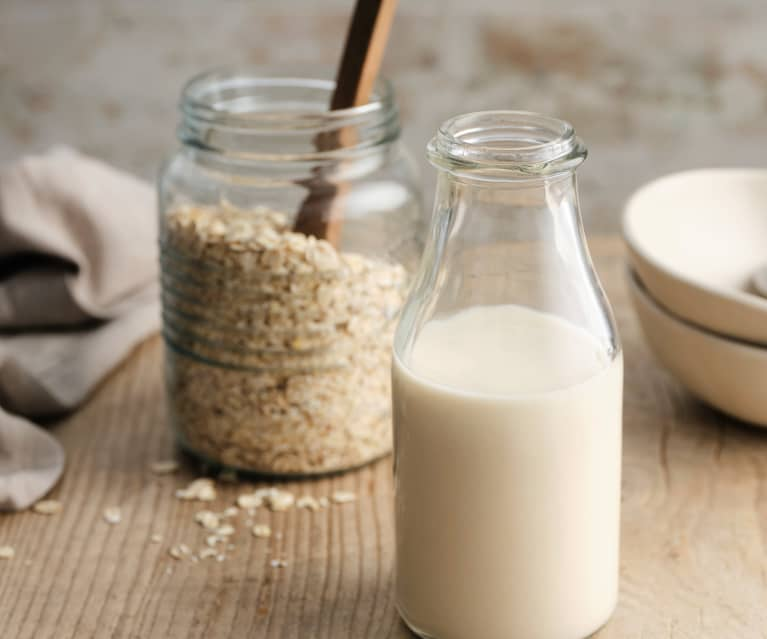

Recipe Menu
Oat Milk recipe

Tasty Oat Milk
Best Oat Milk you've ever had!
Ingredients:
- 1 cup quick-cooking oats
- water to cover
- 3 cups water
- 2 small dates. pitted
Steps:
- Soak oats in enough cool water to cover them. Cover and set aside for 30 minutes.
- Drain the oats using a mesh colander. Combine oats, 3 cups water, and dates in a large bowl. Allow to sit undisturbed until skin on the dates softens, 10 to 15 minutes.
- Transfer oat mixture to a blender. Pulse the mixture a few times and then leave on medium-high speed until completely smooth, about 1 minute. Drain oat milk through a nut bag or cheesecloth to remove all solids. Serve cold or warm.